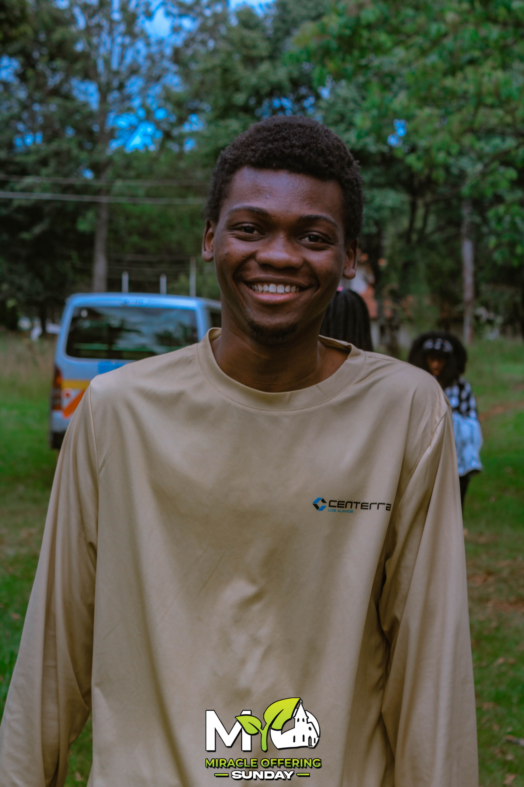

Joram Nyamawi Mwanyika

I streamline business operations using no-code/low-code automation tools like Airtable, Zapier, and Make (formerly Integromat). Collaborating with diverse teams, I tailor automated processes to meet their unique needs through effective communication and teamwork. With technical expertise in HTML, CSS, JavaScript, Python (OOP), Flask, Excel, SQLAlchemy, and SQLite3, I ensure projects are efficient, accurate, and secure. My strong problem-solving, leadership, adaptability, and attention to detail further contribute to the successful and timely completion of projects.